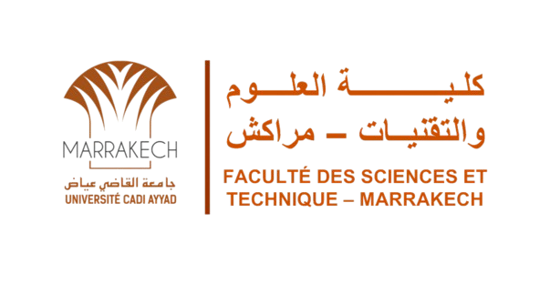

Le 02 -09-2025
GB | GC | GEG | GP | GI | GESE | MSD
Inscriptions prévues : lundi 29 et mardi 30 septembre 2025.
📎 Pièces à fournir.
Le 22 Juillet 2025
Appel à candidature 2025 - 2026
Le 18 Septembre 2025
Le 27 September 2025
Le 25 September 2025
---- Troncs Communs (mise à jour le 03/10/2025)-----
----------- LST (mise à jour le 26/9/2025)------------
---------------- MST (mise à jour le 03/10/2025)----------
---------------- CYCLE INGENIEUR -------------------
Le 01 Octobre 2025
Le 09 Mars 2023
- Dérogation :
- Convention :Stage | PFE
- FICHE DESCRIPTIVE D’UN STAGE DE RECHERCHE.
- CONVENTION DE STAGE DE RECHERCHE LIBRE.
- CONVENTION DE STAGE DE RECHERCHE.
Le 04 September 2024
Le 24 Septembre 2025
Concours d’accès en 2ème année du cycle ingénieur de la Faculté des Sciences et Techniques de Marrakech au titre de l’année universitaire 2025-2026
------------------------------------------------------------------
Concours d’accès en 1ère année du cycle ingénieur de la Faculté des Sciences et Techniques de Marrakech au titre de l’année universitaire 2025-2026
Listes principales et d'attentes des candidats retenus :
- Les inscriptions auront lieu :
Le mardi 23 septembre 2025 pour les admis de la liste principale.
- Les candidats inscrits sur liste d'attente d'une filière qui souhaitent renoncer à leur premier choix de filière au profit de ce choix doivent s'adresser au responsable de la filière concernée.
* Les inscriptions des candidats admis au CNC auront lieu le 16 septembre 2025, de 9h30 à 11h30
Le 27 Septembre 2025
Concours d’accès en 1ère année du cycle Master de la Faculté des Sciences et Techniques de Marrakech au titre de l’année universitaire 2025-2026.
- Les inscriptions des listes principales sont prévues le 29 et 30 Septembre 2025
- Pièces à fournir
Le 25 Septembre 2025
Appel à candidature pour l’accès au Semestre 5 des Licences en Sciences et Techniques 2025-2026
Liste des candidats admis à s’inscrire en semestre 5 :
- LST GARM
- LST MIASI
- LST PCM
* Les inscriptions des candidats admis auront lieu le 29 septembre 2025, de 10h à 12h30
Le 09 Janvier 2025
--------------------------------------------------------------------
eCampusFST:
Urgent